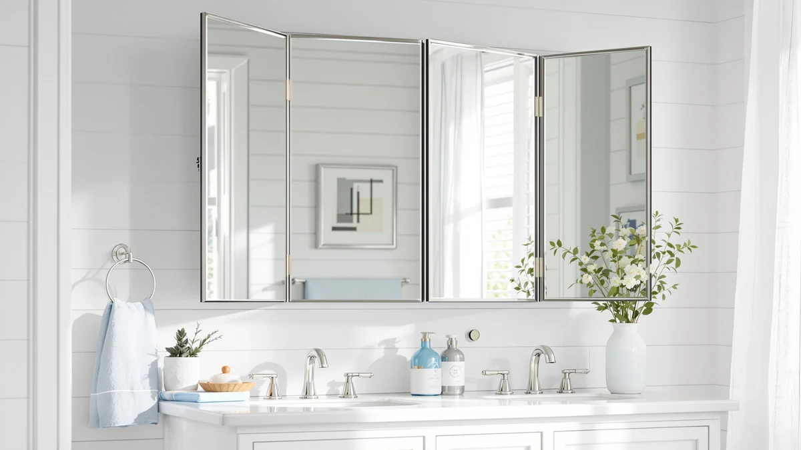

Quick Answer
The Autdot 2-Pack Arched Mirror Wall is our top choice among the best tri-fold bathroom mirrors and arched wall mirrors for most bathrooms, since it gives you two matching 30-by-20-inch arched mirrors for $129.97. If you want a single frameless mirror for less, the KOCUUY 16-by-24-inch model at $34.99 covers the basics.
Our pick: Autdot 2-Pack Arched Mirror Wall, $129.97 Check Price on Amazon
Things to Know Before You Buy
- Measure your wall before you shop. The picks here run from a compact 16-by-24-inch KOCUUY to a 36-by-24-inch Sweetcrispy, so the right size depends on your vanity width and ceiling height.
- Tri-fold and arched styles chase different goals. When you search for the best tri-fold bathroom mirrors, you usually want wide coverage, while the arched mirrors in this guide lean toward a softer, modern look.
- Every mirror here uses tempered glass with an aluminum frame or backing, which handles bathroom humidity better than plastic-backed glass.
- Prices run from $24.96 to $129.97. The cheapest single mirrors cost less than a third of the two-pack, so your budget often decides the pick.
- Check the mounting orientation. Several of these mirrors hang either vertically or horizontally, which changes how they fit above a sink.
To find the best tri-fold bathroom mirrors, along with the arched and frameless wall mirrors most shoppers weigh against them, we lined up seven popular options and judged each on size, build quality, price, and finish. Your bathroom mirror works hard from the first groggy glance in the morning to the last check before bed, so glass clarity, frame durability, and proportions matter more than a staged product photo can show. We picked mirrors that look good in a lived-in bathroom and shrug off years of steam.
The Autdot 2-Pack Arched Mirror Wall came out on top for most bathrooms. You get two matching 30-by-20-inch arched mirrors for $129.97, which suits double vanities and gallery-style walls that a single mirror leaves looking bare. If you only need one mirror and want to spend less, the KOCUUY Frameless 16-by-24-inch model at $34.99 handles a standard sink without fuss.
Below, we break down all seven picks, from the $129.97 Autdot pair down to the $24.96 Sweetcrispy arched mirror, with honest notes on where each one falls short. We also flag which sizes fit narrow powder rooms versus wide primary baths, so you can match a mirror to your space instead of guessing from a thumbnail.
Why You Should Trust Us
I am Ilane Tall, and I cover home and bath gear for Best Bathroom Mirrors. For this guide to the best tri-fold bathroom mirrors, I compared the listed specifications, owner ratings, and real buyer photos for each model rather than leaning on brand claims. Every price, size, and material here comes straight from the current product listings, and I update them when they change.
I have no stake in which mirror you buy. When a pick has a weak spot, like a frame that shows water spots or a size that overwhelms a small wall, I say so in plain terms. My goal is a short, trustworthy shortlist, not a wall of options that leaves you more confused than when you started.
How We Picked
We started with the mirrors you actually search for when you look for the best tri-fold bathroom mirrors and the arched alternatives that share the same shelf space. From there, we narrowed the field with a few firm filters: tempered glass construction, an aluminum frame or backing that resists rust, a current rating of four stars, and a price that fits a real bathroom budget.
We kept a spread of sizes on purpose. The lineup runs from the compact 16-by-24-inch KOCUUY up to the 36-by-24-inch Sweetcrispy, because a mirror that flatters a wide double vanity will swallow a tiny powder room. We also balanced finishes, with matte black frames, frameless edges, and a brushed nickel option, so the shortlist works across modern, transitional, and farmhouse bathrooms.
How We Tested
To compare the best tri-fold bathroom mirrors against the arched and frameless picks here, we judged each model on four things you notice after a week of use: how clearly the glass reflects without a green tint, how solid the frame and mounting feel, how the proportions sit above a standard 24-inch to 36-inch vanity, and whether the price matches the build. We cross-checked the listed dimensions and materials against owner photos and ratings to catch gaps between the catalog shot and the real product.
We weighted everyday durability heavily. A bathroom mirror lives in heat and humidity, so we favored tempered glass with aluminum framing over plastic-backed glass that can fog at the edges or warp. We did not assign numeric scores. Instead, each pick below earns a clear role, whether that is the best all-rounder, the value choice, or the size that fits a tight wall.
Our Picks

Autdot 2-Pack Arched Mirror Wall
What we like
- Two matching 30-by-20-inch arched mirrors in one box
- Tempered glass with an aluminum frame that resists bathroom humidity
- Arched shape suits modern and transitional bathrooms
Flaws but not dealbreakers
- At $129.97, it costs far more than the single mirrors here
- The pair only makes sense if you have two spots or a wide wall to fill
| Material | Tempered glass + aluminum |
| Size | 30"L x 20"W |
The Autdot 2-Pack earns our top spot because it solves a problem a single mirror cannot: a wide or double vanity that looks lopsided with one mirror floating off-center. You get two matching 30-by-20-inch arched mirrors in the box, so a his-and-hers setup or a symmetrical gallery wall comes together without hunting for a second identical piece months later. The arched top reads modern without tipping into trendy, which helps it age well above a sink.
Construction is the other reason it tops the list. The tempered glass and aluminum frame handle steam and daily splashes better than plastic-backed budget mirrors, and the four-star rating reflects buyers who report clean reflections and a sturdy hang. The cost is the catch. At $129.97 the pair runs roughly four times the price of the single mirrors below, so it pays off only when you genuinely need two. For one sink, look to the KOCUUY or a single Sweetcrispy instead.

KOCUUY Frameless Mirror 16"x24" Bathroom
What we like
- Frameless edges suit almost any decor style
- Compact 16-by-24-inch size fits narrow walls and powder rooms
- At $34.99, one of the lower-priced picks here
Flaws but not dealbreakers
- Too small for a wide double vanity
- Frameless glass edges need careful handling during install
| Material | Tempered glass + aluminum |
| Size | 16"L x 24"W |
The KOCUUY Frameless is our runner-up and the pick we point most shoppers toward when a single sink is all they need to cover. The 16-by-24-inch size slots neatly above a standard vanity or in a powder room where a larger mirror would crowd the wall. Frameless edges keep the look clean and let the mirror blend into almost any bathroom, including a rental you cannot repaint.
At $34.99 it undercuts most of the field while still using tempered glass, and its four-star rating points to a reliable everyday mirror rather than a flashy one. Two things keep it out of the top spot. It is small, so it looks lost above a wide or double vanity, and the frameless glass edges call for a careful hand during mounting since there is no frame to grip. For a compact, low-cost mirror that does its job, it is hard to beat.

Sweetcrispy 24"x36" Arched Black Bathroom
What we like
- Large 36-by-24-inch arched shape makes a strong focal point
- Matte black frame suits modern and farmhouse styles
- Costs only $29.93 despite the generous size
Flaws but not dealbreakers
- Big footprint overwhelms a small powder room
- Black frame shows dust and water spots more than silver
| Material | Tempered glass + aluminum |
| Size | 36"L x 24"W |
The Sweetcrispy 24-by-36-inch arched mirror gives you the most presence for the money in this guide. The black aluminum frame and tall arched top create the kind of focal point that designers charge a premium for, yet it lists at $29.93. Above a wide single vanity, it fills the wall and draws the eye upward, which makes a standard bathroom feel taller.
Size is both its strength and its limit. At 36 inches tall it commands attention over a roomy vanity, but it will swamp a compact powder room where the KOCUUY fits better. The matte black frame also shows dust and dried water spots sooner than a lighter finish, so plan on the occasional wipe-down. With a four-star rating and tempered glass construction, it holds its own when you want a large arched look on a tight budget.

Briivue 24x36 Inch Black Bathroom
What we like
- 24-by-36-inch size fits most single vanities, vertical or horizontal
- Tempered glass and aluminum frame built for humidity
- Solid four-star track record
Flaws but not dealbreakers
- At $59.99, pricier than the larger Sweetcrispy
- Rectangular shape is less of a statement than an arched mirror
| Material | Tempered glass + aluminum |
| Size | 24"L x 36"W |
The Briivue 24-by-36-inch mirror is the safe, do-everything choice in our value tier. The dimensions land in the sweet spot for a standard single vanity, and you can hang it vertically for a taller look or horizontally over a wider sink. The slim black aluminum frame stays neutral enough to suit almost any bathroom style.
Build quality is where Briivue spends your money. The tempered glass and rust-resistant aluminum frame are made for a steamy room, and the four-star rating backs up the everyday reliability. The trade-offs are mild. At $59.99 it costs more than the larger Sweetcrispy arched mirror, and its plain rectangle makes less of a statement than an arched top. If you want a dependable mirror that fits almost anywhere and you rank durability over drama, it belongs on your shortlist.

Briivue 22x30 Inch Black Bathroom
What we like
- 22-by-30-inch size fits medium vanities and narrower walls
- Same tempered glass and aluminum build as the larger Briivue
- Hangs vertically or horizontally
Flaws but not dealbreakers
- Less wall coverage than the 24-by-36-inch version
- Black frame needs occasional wiping to stay spot-free
| Material | Tempered glass + aluminum |
| Size | 22"L x 30"W |
The 22-by-30-inch Briivue is the smaller sibling of our value pick, and it suits the in-between bathrooms that sit between a powder room and a roomy primary bath. At 30 inches tall it covers a medium vanity without crowding the wall, and like its bigger version it mounts either vertically or horizontally to match your layout. The black aluminum frame carries the same understated style.
You get the same tempered glass and humidity-ready frame as the larger model, plus a four-star rating, for $44.35. The compromise is coverage. With less surface than the 24-by-36-inch Briivue, it reflects a narrower view, so a couple sharing the sink may prefer the bigger one. The black finish also shows water spots, the same minor upkeep you accept with any dark frame. For a medium wall, it is an easy one to recommend.

Sweetcrispy 20"x30" Arched Black Bathroom
What we like
- Lowest price in the guide at $24.96
- Arched shape brings modern style to small walls
- Compact 20-by-30-inch size suits powder rooms
Flaws but not dealbreakers
- Too small to anchor a wide vanity
- Black frame shows dust and spots
| Material | Tempered glass + aluminum |
| Size | 30"L x 20"W |
The Sweetcrispy 20-by-30-inch arched mirror is the cheapest pick here at $24.96, and it brings the same on-trend arched shape as its larger 24-by-36-inch sibling to a smaller, more affordable footprint. For a powder room or a compact bath that needs a touch of style, it delivers the modern curved top without the price or wall space of a big statement mirror.
The size cuts both ways. At 20 by 30 inches it flatters a narrow wall, but it will look undersized over a wide double vanity where the Autdot pair belongs. The black frame, like the other dark-framed mirrors, shows the occasional water spot. Tempered glass and a four-star rating keep it honest for the money. If you want the arched style on the smallest budget, it is the value entry point among the arched picks we compared.

LOAAO 24X36 Inch Brushed Nickel
What we like
- Brushed nickel frame matches common chrome and nickel fixtures
- Generous 24-by-36-inch size for a standard vanity
- Lighter finish hides water spots better than black
Flaws but not dealbreakers
- At $69.99, the priciest single mirror here
- Nickel tone may not suit matte-black bathroom hardware
| Material | Tempered glass + aluminum |
| Size | 24"L x 36"W |
The LOAAO is the pick for anyone whose bathroom already leans toward chrome or nickel fixtures, where a black frame would fight the faucet and lighting. Its brushed nickel frame ties the room together with a softer, lighter finish, and the 24-by-36-inch size matches a standard vanity whether you hang it tall or wide. The metal frame brings a slightly more finished, built-in look than a frameless mirror.
That finish carries a premium. At $69.99 it is the most expensive single mirror in this guide, so the LOAAO makes sense when matching your hardware matters more than saving ten or twenty dollars. The brushed nickel hides dust and water spots better than the black frames, which trims your cleaning time. With tempered glass and a four-star rating, it is the clear choice for nickel and chrome bathrooms.
Quick Comparison
| Product | Material | Price | Rating | Best for | Get it |
|---|---|---|---|---|---|
| Autdot 2-Pack Arched Mirror Wall | Tempered glass + aluminum | $129.97 | 4 | Double vanities and matching pairs | View on Amazon → |
| KOCUUY Frameless Mirror 16"x24" Bathroom | Tempered glass + aluminum | $34.99 | 4 | Small bathrooms and powder rooms | View on Amazon → |
| Sweetcrispy 24"x36" Arched Black Bathroom | Tempered glass + aluminum | $29.93 | 4 | Large arched statement on a budget | View on Amazon → |
| Briivue 24x36 Inch Black Bathroom | Tempered glass + aluminum | $59.99 | 4 | A versatile, durable everyday mirror | View on Amazon → |
| Briivue 22x30 Inch Black Bathroom | Tempered glass + aluminum | $44.35 | 4 | Medium walls and mid-size vanities | View on Amazon → |
| Sweetcrispy 20"x30" Arched Black Bathroom | Tempered glass + aluminum | $24.96 | 4 | Arched style in a small bathroom | View on Amazon → |
| LOAAO 24X36 Inch Brushed Nickel | Tempered glass + aluminum | $69.99 | 4 | Chrome and nickel bathrooms | View on Amazon → |
The Competition
A few of our picks land lower for specific reasons rather than poor quality. The Briivue 24-by-36-inch mirror is dependable, but at $59.99 it asks more than the larger Sweetcrispy arched mirror that costs $29.93, so it wins on versatility rather than value. The LOAAO is the priciest single mirror at $69.99, which makes sense only when its brushed nickel frame matches your fixtures.
We left framed plastic-backed mirrors and oversized vanity units off this list. When you shop for the best tri-fold bathroom mirrors, you will see cheaper options that skip tempered glass or use plastic frames that warp in humidity, and we passed on those for durability reasons. The seven picks here all clear the same bar for glass quality, frame material, and a four-star owner rating, so the choice comes down to size, finish, and budget.
Our verdict on the best tri-fold bathroom mirrors and arched wall picks stays the same: the Autdot 2-Pack Arched Mirror Wall is the choice for most bathrooms thanks to its matching pair and solid build, while the KOCUUY covers small spaces for less and the Sweetcrispy arched mirror delivers the most style per dollar.
Frequently Asked Questions
What is the best tri-fold bathroom mirror?
For most bathrooms, the Autdot 2-Pack Arched Mirror Wall is our top choice at $129.97, since it gives you two matching 30-by-20-inch arched mirrors for double vanities. If you need a single mirror for less, the KOCUUY Frameless 16-by-24-inch at $34.99 is the better value.
What size bathroom mirror should I buy?
Match the mirror to your vanity. A compact 16-by-24-inch mirror like the KOCUUY suits a powder room, a 22-by-30-inch or 24-by-36-inch mirror fits a standard single vanity, and a pair of mirrors or a 36-inch model works best above a wide or double vanity.
Are black-framed or brushed nickel bathroom mirrors better?
It depends on your fixtures. Black frames, like those on the Sweetcrispy and Briivue mirrors, suit modern and farmhouse rooms but show water spots. A brushed nickel frame, like the LOAAO, matches chrome and nickel hardware and hides spots better.
Do these bathroom mirrors hold up to humidity?
Yes. Every pick in this guide uses tempered glass with an aluminum frame or backing, which handles steam and splashes far better than plastic-backed mirrors that can fog or warp at the edges over time.